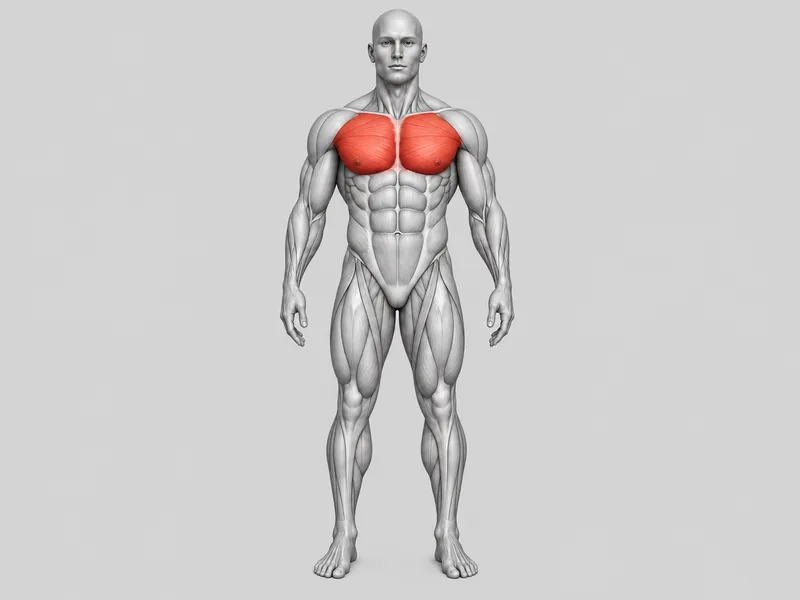
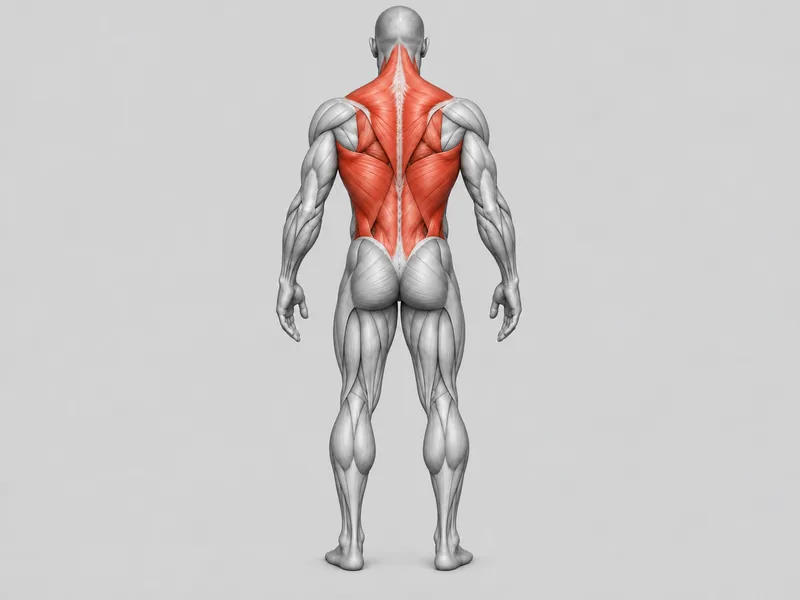
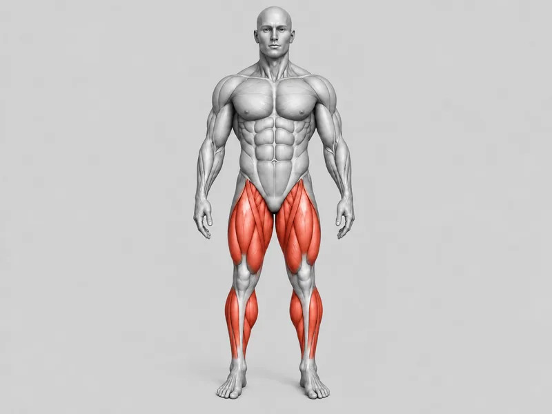
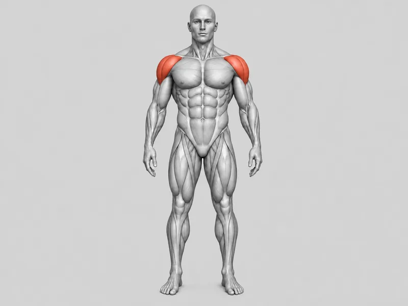
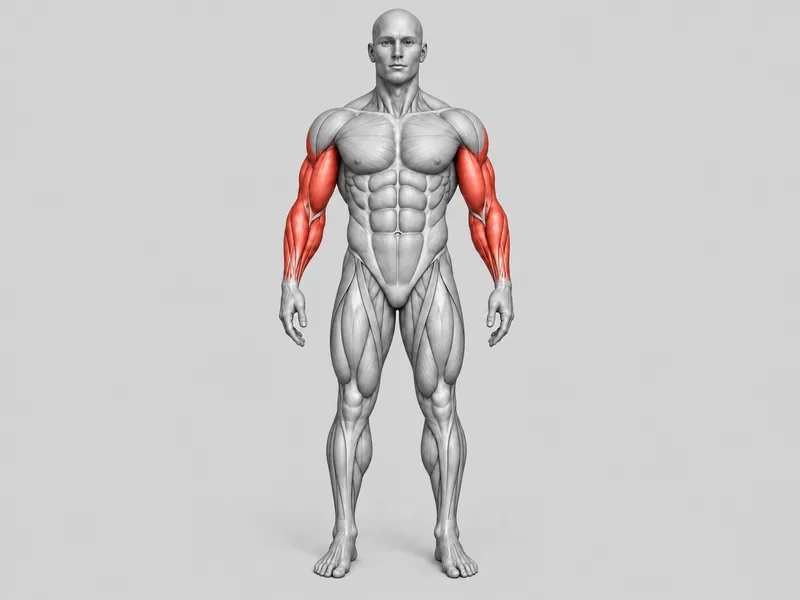
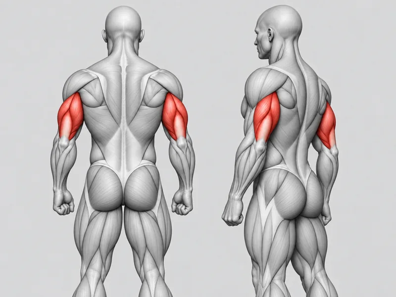
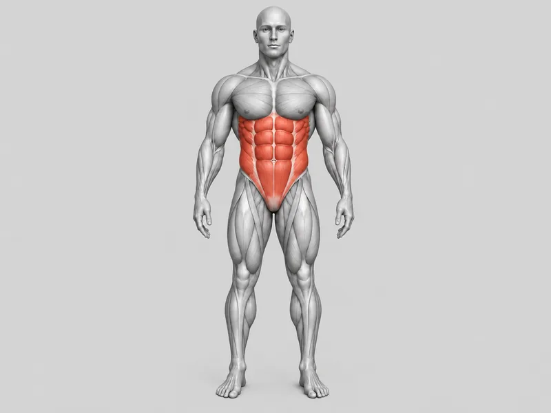

Organize seus treinos
Veja sugestões de exercícios, marque os grupos já treinados
e acompanhe sua semana de treino.
Grupos musculares
Escolha a região que deseja trabalhar.
Peito

Região peitoral.
Sugestões de exercícios
- Supino reto
- Supino inclinado
- Crucifixo
Costas

Região das costas.
Sugestões de exercícios
- Puxada frontal
- Remada baixa
- Remada curvada
Pernas

Principais músculos das pernas.
Sugestões de exercícios
- Agachamento
- Leg press
- Cadeira extensora
Ombros

Região dos ombros.
Sugestões de exercícios
- Desenvolvimento
- Elevação lateral
- Elevação frontal
Bíceps e antebraço

Região do bíceps e antebraço.
Sugestões de exercícios
- Rosca direta
- Rosca martelo
- Rosca inversa
Tríceps

Musculatura do tríceps.
Sugestões de exercícios
- Tríceps pulley
- Tríceps francês
- Tríceps testa
Abdômen

Região abdominal.
Sugestões de exercícios
- Abdominal
- Prancha
- Elevação de pernas
Minha semana
Veja quais grupos musculares você já treinou nesta semana.